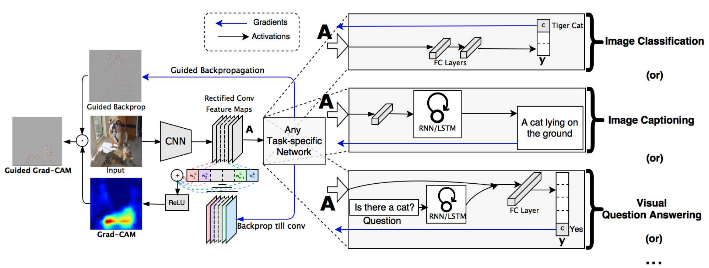

Local interpretability in a nutshell¶
Local interpretability helps to understand why did the model make a certain prediction for an instance. To explain the model's prediction on a single instance we will use The local interpretability techniques available in this package are:
- SHAP local explanation plots for non TreeBased model (model agnostic)
- SHAP local explanation plots for TreeBased model (XGBoost, LightGBM, CatBoost, Pyspark & most tree-based models in scikit-learn).
- SHAP local explanation plots for DL model on text or tabular data (using Deep SHAP)
- GRAD-CAM for DL models on image data
SHAP force plots¶
SHAP (SHapley Additive exPlanations) by Lundberg and Lee (2016) is a game theoretic approach to explain the output of any machine learning model. It connects optimal credit allocation with local explanations using Shapley values from game theory and their related extensions. SHAP values interpret the impact of having a certain value for a given feature in comparison to the prediction we'd make if that feature took some baseline value. (See the SHAP feature importance and summary plots section from Global interpretability in a nutshell for more details on SHAP)
SHAP force plot allows to explain a single prediction by showing the contribution of each feature value to the model prediction. It visualizes feature attributions such as Shapley values as "forces". Each feature value is a force that either increases or decreases the prediction. The prediction starts from the baseline. The baseline for Shapley values is the average of all predictions. In the plot, each Shapley value is an arrow that pushes to increase (positive value) or decrease (negative value) the prediction. These forces balance each other out at the actual prediction of the data instance.
SHAP offers many explainers to compute the Shapley values used in the force plot. In this package, we use 3 explainers to interpret the model prediction(s) :
- Kernel SHAP : uses a specially-weighted local linear regression to estimate SHAP values for any ML model.
- Tree SHAP : a variant of SHAP for tree-based machine learning models such as decision trees, random forests and gradient boosted trees. TreeSHAP was introduced as a fast, model-specific alternative to KernelSHAP.
- Deep SHAP : a high-speed approximation algorithm for SHAP values in deep learning models that builds on a connection with DeepLIFT .
SHAP force plots for non TreeBased model¶
For non Tree based models, we use Kernel SHAP, a model agnostic explainer, to compute the shapely values. The Kernel SHAP algorithm provides model-agnostic (black box), human interpretable explanations suitable for regression and classification models applied to tabular data.
Here is an example of using ExplainML class form readml.explainers.ml.explain_ml to interpret locally all df_test instances.
Since we are using a non Tree based model, we set tree_based_model to False, and local_shap will use Kernel SHAP to compute SHAP force plots
(plots will be stored in output path):
from readml.explainers.ml.explain_ml import ExplainML
exp = ExplainML(
model=svm_model,
task_name="classification",
tree_based_model=False,
features_name=["f1", "f2", "f3", "f4", "f5"],
features_to_interpret=["f1", "f2", "f3", "f4", "f5"], # not used for SHAP
target_col="target",
out_path="outputs_ml/",
)
exp.local_shap(df_test)
SHAP force plots for TreeBased model¶
For Tree based models, we use Tree SHAP, a model specific explainer, to compute the shapely values.
Tree SHAP is a variant of SHAP for tree-based machine learning models such as decision trees, random forests and gradient boosted trees. TreeSHAP was introduced as a fast, model-specific alternative to KernelSHAP, but sometimes it can produce unintuitive feature attributions (nothing is perfect, right?).
Fast C++ implementations are supported for XGBoost, LightGBM, CatBoost, scikit-learn and pyspark tree models
Here is an example of using ExplainML class form readml.explainers.ml.explain_ml to interpret locally all df_test instances.
Since we are using XGBoost, we have to set tree_based_model to True, and local_shap will use Tree SHAP to compute SHAP force plots
(plots will be stored in output path):
from readml.explainers.ml.explain_ml import ExplainML
exp = ExplainML(
model=xgboost,
task_name="classification",
tree_based_model=True,
features_name=["f1", "f2", "f3", "f4", "f5"],
features_to_interpret=["f1", "f2", "f3", "f4", "f5"], # not used for SHAP
target_col="target",
out_path="outputs_ml/",
)
exp.local_shap(df_test)
SHAP force plots for DL models on tabular and text data¶
For Deep Learning models applied to text or tabular data, we use Deep SHAP, a model specific explainer.
Deep SHAP is a high-speed approximation algorithm for SHAP values in deep learning models that builds on a connection with DeepLIFT. The SHAP implementation differs from the original DeepLIFT by using a distribution of background samples instead of a single reference value, and using Shapley equations to linearize components such as max, softmax, products, divisions, etc. Note that some of these enhancements have also been since integrated into DeepLIFT.
TensorFlow models and Keras models using the TensorFlow backend are supported.
Note
To interpret locally a deep learning model applied to text data, you need to provide a word2index mapping (A dictionary where keys are the vocabulary and the values are the indexes)
Here is an example of using ExplainDL class form readml.explainers.dl.explain_dl to interpret locally the first 10 instances of df_test.
Since we are dealing with text data, we have to provide the word2index mapping. explain_text method will use Deep SHAP to compute SHAP force plots
(plots will be stored in output path)
from readml.explainers.dl.explain_dl import ExplainDL
exp = ExplainDL(model=lstm_model, out_path="outputs_dl/")
exp.explain_text(
test_data=test_data.head(10),
target_col="target",
word2idx=word2idx_dict,
)
GRAD-CAM for DL models on image data¶
GRAD-CAM (Gradient-weighted Class Activation Mapping) is a generalization of the Class Activation Mapping (CAM) to any CNN-based architectures. For a particular category, this method generates a map that indicates the discriminative image regions used by the CNN to identify that category. For more details on GRAD-CAM, we recommend to read the original paper .
Here is an example of using ExplainDL class form readml.explainers.dl.explain_dl to interpret locally a CNN applied to image data
from readml.explainers.dl.explain_dl import ExplainDL
exp = ExplainDL(model=cnn_model, out_path="outputs_dl_image/")
exp.explain_image(
image_dir= "inputs/image_data",
size=(224,224),
color_mode="rgb",
)